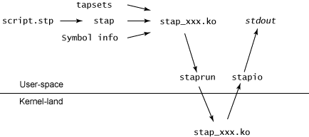

systemtap
Table of Contents
1 systemtap
- SystemTap http://sourceware.org/systemtap/
- SystemTap http://sourceware.org/systemtap/documentation.html
- Linux 自检和 SystemTap http://www.ibm.com/developerworks/cn/linux/l-systemtap/
- IBM Redbooks | SystemTap: Instrumenting the Linux Kernel for Analyzing Performance and Functional Problems http://www.redbooks.ibm.com/abstracts/redp4469.html
- Architecture of systemtap a Linux trace probe tool http://sourceware.org/systemtap/archpaper.pdf
- Dynamic Instrumentation of Production Systems http://static.usenix.org/event/usenix04/tech/general/full_papers/cantrill/cantrill_html/
- sudo apt-get install systemtap # 直接使用apt安装
- sudo apt-get install elfutils # 可能需要安装
- NOTE（blog）：linux还自带perf工具也能够观察kernel行为
1.1 Introduction
systemtap的工作原理是使用linux提供的kprobe接口 TODO(blog):more about kprobe ，将用户需要观测linux系统的行为转换成为c（使用kprobe)并且编译成为kernel object然后运行。 systemtap使用一种触发式的工作方式，通过安装探针（probe）来监控系统的行为，一旦探针事件出现的话就会触发对应的代码。代码使用自己定义的语言，和C语言非常类似。

- stap 流程从将脚本转换成解析树开始 (pass 1)
- 然后使用细化（elaboration）步骤 (pass 2) 中关于当前运行的内核的符号信息解析符号
- 接下来转换流程将解析树转换成 C 源代码 (pass 3) 并使用解析后的信息和 tapset 脚本（SystemTap 定义的库，包含有用的功能）
- stap 的最后步骤是构造使用本地内核模块构建进程的内核模块 (pass 4)。

- staprun 负责启动kernel object
- stapio 负责收集kernel object的输出
- 执行期间中断的话将执行清除进程，卸载模块并退出所有相关的实用程序
一个使用systemtap的简单例子
[blog@umeng-ubuntu-pc] > sudo stap -ve 'probe begin { log("hello world") exit() }'
Pass 1: parsed user script and 76 library script(s) using 92476virt/22592res/2616shr kb, in 80usr/0sys/85real ms.
Pass 2: analyzed script: 1 probe(s), 2 function(s), 0 embed(s), 0 global(s) using 93000virt/23472res/2816shr kb, in 0usr/0sys/4real
ms.
Pass 3: translated to C into "/tmp/stapbx8Gpk/stap_7703b9bd08bd359932cf8da12019f6d8_813.c" using 93000virt/23628res/2964shr kb, in 0
usr/0sys/0real ms.
Pass 4: compiled C into "stap_7703b9bd08bd359932cf8da12019f6d8_813.ko" in 3240usr/510sys/4048real ms.
Pass 5: starting run.
hello world
Pass 5: run completed in 10usr/10sys/600real ms.
[blog@umeng-ubuntu-pc] > sudo stap -ve 'probe begin { log("hello world") exit() }'
Pass 1: parsed user script and 76 library script(s) using 92476virt/22592res/2616shr kb, in 80usr/10sys/85real ms.
Pass 2: analyzed script: 1 probe(s), 2 function(s), 0 embed(s), 0 global(s) using 93000virt/23472res/2816shr kb, in 0usr/0sys/4real
ms.
Pass 3: using cached /home/blog/.systemtap/cache/77/stap_7703b9bd08bd359932cf8da12019f6d8_813.c
Pass 4: using cached /home/blog/.systemtap/cache/77/stap_7703b9bd08bd359932cf8da12019f6d8_813.ko
Pass 5: starting run.
hello world
Pass 5: run completed in 0usr/10sys/586real ms.
可以看到在第二次运行的时候systemtap会去读取缓存内容。
1.2 Architecture of systemtap a Linux trace probe tool
1.2.1 Motivation
- A tracing and probing tool gives knowledgeable users a deep insight into what is going on inside the operat-ing system, going well beyond isolated tools like netstat, ps, top, iostat 了解当前系统运行状况的工具
1.2.2 Systemtap processing steps

- Probe language
- The language describes an association of handler subroutines with probe points. 类似AWK的工作方式，绑定一些handle到probe points上面
- Probe points are abstract names given to identify a particular place in kernel/user code, or a particular event (timers, counters) that may occur at any time. （所谓探测点是用来识别内核或者是用户代码的一些位置，或者是某些事件的发生）
- Handlers are subroutines written in the script language, which are run whenever the probe points are hit.（而handler就是当探测点出发的时候执行的过程）
- The language resembles dtrace’s “D”, itself inspired by the old UNIX tool awk（语言名字叫做D引用dtrace,非常类似awk的语言）
- These are simplified from C, lacking types, declarations, and most indirection 类似C但是没有类型和声明以及间接引用
- but adding associative arrays and simplified string process-ing. 关联数组实现
- The language includes some extensions to interoperate with the target software being instrumented, in order to refer to its data and program state. 增加扩展用来引用系统或者是应用程序特定的数据。
- Elaboration
- Elaboration is a processing phase that analyzes the input script, and resolves any needed symbolic references to the kernel, user programs, or other any “tapsets”. （这个过程解析符号交叉引用，包括内核，用户程序以及tapset）
- Tapsets are libraries of script or C code used to extend the capability of a basic script（tapset类似library，有D实现也有C扩展）
- Elaboration is analogous to linking an object file with needed libraries, turn them into a self-contained executable.（类似与链接过程）
- References to kernel data such as function parameters, local and global variables, functions, source locations, all need to be resolved to actual run-time addresses.（对于引用kenel或者是可执行文件的符号都是在run之前就完成解析的）
- This is most rigorously done by processing the DWARF debugging information emitted by the compiler, in the same way as an ordinary debugger would（通过处理DWARF debugging信息来完成的）
- However, such debug data processing is transformed into an executable form ahead of time, so that during actual probe execution, no explicit decoding is necessary.（但是这些debug数据因为是静态的，所以可以在run之前完成）
- Translation
- Once an entire set of probe functions is processed through the elaboration stage, they are translated to a quantity of C code.（生成C代码）
- Each systemtap construct is expanded to a block of C that includes whatever locking and safety checks are necessary.
- Control-flow constructs translate to include runaway-prevention logic. TODO（blog）：？？？
- Each variable shared amongst probes is mapped to an appropriate static declaration, and accesses are protected by locks.（全局变量生成static并且通过lock来保护）
- Each group of local variables is placed into a synthetic call frame structure that keeps them off the tiny real kernel stacks. TODO(blog):？压缩局部变量的存储方式
- Probe handlers are wrapped by an interface function which uses whatever probe point registration API is appropriate. （所有的probe handler都被包装成为function然后注册到probe point回调，但是方式有所不同）
- For location type probe points targeting the kernel, this generally uses kprobes.（如果是内核探测点的话，那么使用kprobe)
- Where the target software is user-level, probe points would need to be inserted into specific processes’ executable segments, using a mechanism yet to be specified.（如果是用户程序探测点的话，那么需要修改进程内存）
- When complete, the generated C code is compiled, and linked with the runtime, into a stand-alone kernel module. For security reasons, the module may be cryptographically signed, so that it may be archived and later reused here, or on another computer without a compiler installed.（编译成为ko模块，并且签名做cache)
- Once an entire set of probe functions is processed through the elaboration stage, they are translated to a quantity of C code.（生成C代码）
- Execution
- To run the probes, the systemtap driver program simply loads the kernel module using insmod. 使用insmod安装ko模块
- The module will initialize itself, insert the probes, then sit back and let the probe handlers be triggered by the system to collect and pass data. It will eventually remove the probes at unload time.（模块初始化之后安装probe然后等待handle触发，在unload的时候会将probes全部移除）
- When a probe is hit, the associated handler routine takes over the processor, suspending the target software briefly. When all handlers for that probe point have been executed, the target program resumes.（probe hit之后handler会执行，等待所有的handler执行完成之后目标程序才开始运行，因此最好不用hold住handler)
- The probe run concludes when the user sends an interrupt to the driver, or when the probe script runs an exit primitive. (This primitive might simply send a SIGINT to the running user-level driver process.) 通过发起信号结束
1.2.3 Programming
- A systemtap script file has the suffix “.stp”
- A script file is a sequence of top-level constructs, of which there are three types: 下面这些元素组成
- probe definitions,
- auxiliary function definitions, 辅助函数定义
- and global variable declarations. 全局变量
- These may occur in any order, and forward references are permitted. 可以向前引用
- Multiple probe handlers may execute concurrently on a multiprocessor. Multiple probe definitions may end up referring to the same event or program location 多个probe handler可能会在多个CPU上同时执行，并且不同的probe def可能引用到program的相同位置，因此需要注意多线程问题
- 但是之前也提到了对于全局变量隐含地有一个access lock.
- A script may make references to an identifier defined elsewhere in library of script tapsets. Such a cross-reference causes the entire tapset file providing the definition to be merged into the elaborated script, as if it was simply concatenated. (如果引用其他script变量的话，那么elaboration阶段会将引用的script全部包含进来，简单地看就像是合并）
- Fatal errors that occur during script execution cause a winddown of activity associated with the systemtap script, and an early abort. Running out of memory, dividing by zero, exceeding an operation count limit, calling too many nested functions, are just a few types of fatal errors（运行中如果出现问题的话会使得script提前中止）
- Probe points
NOTE（blog）：这个部分是比较重要的，说明了probe point的定义规则- A probe definition gives probe points in a comma-separated list, and an associated action in the form of a statement block.（使用，分割多个probe points）
- Each probe point specification has a “dotted-functor” syntax such as kernel.function("foo").return（probe point通过.来表示层级）
- kernel or module("foo") kernel或者是foo.ko模块
- functions
- function("fn")
- fn可以使用?,*做通配
- function("fn@filename")
- function("fn@filename:lineno")
- function(0x1f) PC address located.
- .callees 可以指定这个fn所有调用的函数
- .return fn返回时候触发，默认是.entry
- function("fn")
- statements NOTE（blog）：分析执行过程
- statement("fn") 函数fn入口
- statement("fn@filename")
- statement("fn@filename:lineno")
- .relative(0x1f) 偏移定位
- .label("need_resched") 标签定位
- statement(0x1f) PC address located.
- events
- 主要指抽象事件，和kernel或者是program无关。
kernel.function("sys_read").return a return probe on the named function. module("ext3").function("*@fs/ext3/inode.c") every function in the named source file, a part of ext3fs kernel.function("kmalloc").callees every function known statically to be callable from kmalloc module("usb-storage").statement(0x0233) the given address, which must be at an instruction boundary kernel.function(0xffffffff802202dc).return a return probe on whichever function that contains the given address
- Language Elements
- Identifiers
- Systemtap identifiers have the same syntax as C identifiers, except that $ is also a legal character.
- Identifiers that begin with $ are interpreted as references to variables in the target software, rather than to systemtap script variables. 以$开头标示引用的是target一些变量
- Types
- Numbers are 64-bit signed integers.
- Strings
- Statistics. These are special objects that compute aggregations (statistical averages, minima, his-tograms, etc.) over numbers.（用来做统计的一些数据类型）
- Associative arrays
- Identifiers
- Statements
- foreach ( <names> in <array_name> ) <stmt>
- next 执行下个handler
- delete <expression> 删除关联数组或者是其中元素
- delete noise
- delete smell ["dog", 0]
- Expressions
- statistics accumulation: <<< 统计类型输入
- string concatenation: . (period) 字符串连接
- <key> in <array> or [<key1>, <key2>, …] in <array>
- associative-array references: <array>[<expr>] or <array>[<expr>,<expr>]
- $<var>-><field>. Here <var> is a reference to a struct-pointer type variable in the target. 引用target变量内部字段
- Auxiliary functions
- function(arglist) 自动推导类型
1.2.4 Tapsets
- Script tapsets
- The simplest kind of tapset is one that uses the ordinary script language to define new probes, auxiliary functions, global variables, for invocation by an end-user script or another tapset. （可以用来定义新的probe,辅助函数以及全局变量）
- Recall that a script that makes otherwise undefined reference to an identifier (function or global variable) that is defined by another script in a library directory causes that script to be included in the elaborated program.（因为使用全局变量的时候会将所定义的script包含进来，所以那么这个script相当也在使用）
global tgid_history # always contains the last few tgids scheduled global _histsize probe begin { _histsize = 10 } probe kernel.function("context_switch") { # rotate array for (i=_histsize-1; i>1; i--) tgid_history [i] = tgid_history [i-1]; tgid_history [0] = $prev->tgid; }- In addition, a script tapset can define a probe alias. This is a way of synthesizing a higher level probe out of a lower level one. 重新定义一些probe point将一些底层的probe point进行抽象和包装
- This consists of renaming a probe point, and may include some script statements. 附带了语句，这些语句在probe point之前会执行，这样的话就可以准备一些对应的局部变量。
- These statements are all executed before the others that are within the user’s probe definition (which referenced the alias), as if they were simply transcribed there.
- This way, they can prepare some useful local variables, or even conditionally reject a probe hit using the next statement.
probe kernel.resource.oom.nonroot = kernel.statement("do_page_fault").label("out_of_memory") { if ($tsk->uid == 0) next; victim_tgid = $tsk->tgid; victim_pid = $tsk->pid; victim_uid = $tsk->uid; victim_fault_addr = $address } // usage. probe kernel.resource.oom.nonroot { trace ("OOM for pid " . string (victim_pid)) }
- C tapsets
1.2.5 Safety
1.2.6 Lower layer issues
- Kernel-to-user transport
- Data collected from systemtap in the kernel must somehow be transmitted to userspace. This transport must have high performance and minimal performance impact on the monitored system. 在内核态收集的数据必须发送到用户态空间，这个传输过程必须满足高性能。
- One candidate is relayfs
- Relayfs provides an efficient way to move large blocks of data from the kernel to userspace
- The data is sent in per-cpu beffers which a userspace program can save or display. 每个CPU都对应的数据buffer
- Drawbacks are that the data arrives in blocks and is separated into per-cpu blocks, possibly requiring a post-processing step that stitches the data into an integrated steam. 提供stream的时候需要将每个CPU的数据stitch起来
- Relayfs is included in some recent -mm kernels. It can be built as a loadable module and is currently checked into CVS under src/runtime/relayfs.
- The other candidate is netlink. NOTE（blog）：感觉相比relayfs，这个东西似乎更加适合小需要实时展现的数据
- Netlink is included in the kernel. It allows a simple stream of data to be sent using the familiar socket APIs. It is unlikely to be as fast as relayfs.
- Relayfs typically makes use of netlink as a control channel. With some simple extensions, the runtime can use netlink as the main transport too. So we can currently select in the runtime between relayfs and netlink, allowing us to support streams of data or blocks. And allowing us to perform direct comparisons of efficiency（relayfs底层使用netlink来做控制channel. 做成可扩展的方式可以在两个实现下面做切换对比性能）
- Output
- Depending on the primitives used in the systemtap script, output may flow gradually via logging streams (printk, netlink, etc.), or in large batches (relayfs files).
1.3 probe
TODO(blog):
1.4 language
TODO(blog):